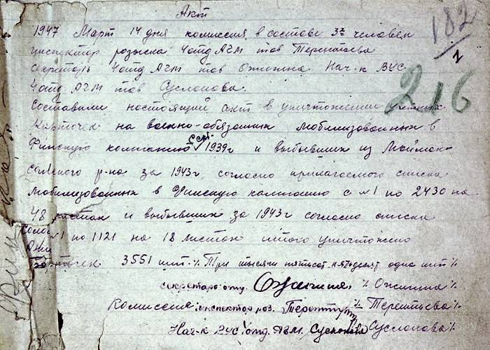
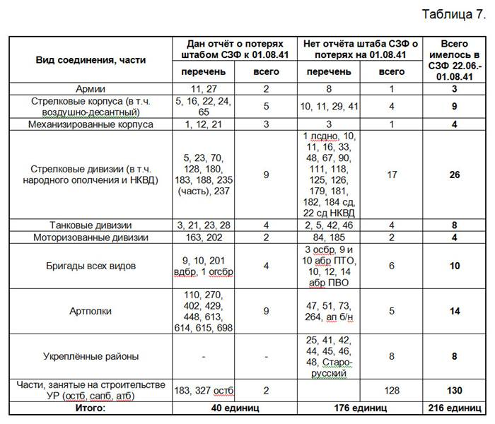

|
«"…А в ответ тишина – он вчера не вернулся из боя!". Часть 5
Опубликовано в журнале "Военная археология", № 5, 2011 год.
Продолжение, начало см.
http://www.soldat.ru/news/865.html
http://www.soldat.ru/news/866.html
http://www.soldat.ru/news/878.html
http://www.soldat.ru/news/880.html
.
Замначштаба СЗФ генерал-майор Д. Гусев, заведомо зная о недостоверности своего доклада от 10 июля 1941 г., весьма аккуратно назвал отсутствие людей некомплектом. Штаб фронта не мог правдиво отчитаться за утрату людей и техники, а сообщать по инстанции о нехватке ресурсов войск было необходимо. Подчинённые войска не отчитались по своим потерям в штаб фронта, а раз нет отчётов снизу, то нет и отчёта наверх по лестнице подчинения. Пришлось сообщать лишь о "некомплекте". Фактически - врать, если назвать вещи своими именами.
Чем, как не потерями, является этот "некомплект"? Военнослужащие не откомандированы, не демобилизованы, не лечатся в медсанбатах и полковых медпунктах в расположении своих частей. Военнослужащих нет по списку в частях на конкретную дату в итоге неблагоприятных боевых действий. Их нет в строю. Они были на 09.06.41 или вошли в состав войск фронта позже и их не стало к 01.08.41. Для воюющих войск это потери личного состава.
Массовых изменений штатного состава войск военного времени к 01.08.41 еще не произошло. Некомплект рассчитывался штабистами СЗФ из сопоставления с штатами военного времени частей и соединений (для сд 04/100 14583-14831 чел.), введёнными в действие с начала войны согласно мобплана МП-41. Это конкретно показано в ведомостях БЧС фронта. Штат сд 04/400 (14444 чел.) ни в одной из упомянутых выше дивизий на момент расчёта некомплекта введён не был, ибо все они были довоенными кадровыми соединениями, развёрнутыми по мобплану по штату 04/100. Эта же картина характерна для всех кадровых сд РККА, вступивших в бои в июне-августе 1941 г. (160 сд). Только несколько дивизий во внутренних военных округах (88, 238) и начавшие формирование новые соединения около 2 месяцев с середины июля 1941 г. пребывали в штате 04/400. Сокращённый штат сд 04/600 был введён 29.07.41, а в войсках применён массово только с 19.09.41. По танковым дивизиям штата 010/10 численность составляла 10942 чел., по моторизованным штата 05/70 - 11579 чел. Относительно этой численности и определялся некомплект.
Из таблицы 4 ясно видно, что приграничные дивизии СЗФ уже 9 июня 1941 г. содержались в численности штата военного времени и даже превышали его. Дивизии, которые начали выдвигаться к госгранице согласно Директивы НКО от 13.06.41, также были пополнены до начала войны за счёт новобранцев, предназначенных для развёртывания частей 25, 41, 42, 44, 45, 46, 48 УР, и доведены до штата военного времени в период 10-15 июня 1941 г. (ЦАМО РФ, ф. 140, оп. 12981, д. 1, л. 360, ф. 58, оп. 818884, д. 5, л. 188). Каждая дивизия должна была сформировать артпульбатальоны и прочие подразделения для включения их в УРы, но, поскольку УРы не развернулись, новобранцы остались в дивизиях.
В соединения и части ПрибОВО - СЗФ по мобплану МП-41 было приписано 233000 чел. из Московского ВО (ЦАМО РФ, ф. 140, оп. 13002, д. 5, л. 5), которые начали прибывать с 20 июня 1941 г. за счёт скрытой мобилизации под видом привлечения на Большие учебные сборы. Местные национальности в состав войск не приписывались (см. там же). После начала открытой мобилизации с 24 июня в войска десятками эшелонов начал поступать оставшийся приписной состав из МВО (ЦАМО РФ, ф. 140, оп. 13002, д. 12, лл. 1-47). Развёртывание всего многообразия частей военного времени было произведено почти полностью за некоторыми исключениями. Эти исключения касались ненадобности развёртывания приграничных УРов, некоторой части тыловых частей и учреждений. Также отказались от комплектации потрёпанных в боях сд, тд, и мд вновь до полных штатов военного времени ввиду нехватки вооружения и всех видов снабжения. У госграницы и в ближнем к ней тылу в 35 окружных и армейских складах было оставлено свыше 100 тысяч комплектов обмундирования, огромное количество вооружения, снаряжения, многие тысячи тонн боеприпасов, продовольствия, ГСМ (ЦАМО РФ, ф. 221, оп. 1372, д. 23, лл. 6-7). Ни одевать, ни вооружать, ни снабжать приписанную до войны массу военнообязанных запаса из ресурсов фронта было уже нечем. Поэтому ту её часть, что не успела поступить в соединения СЗФ, с вечера 27.06.41 развернули в эшелонах в Себеже, Невеле, Великих Луках, Полоцке и отправили обратно в МВО, где из них начали формировать 3 дивизии НКО (242, 245, 248 сд - в Калинине и Ржеве, Вышнем Волочке, Вязьме соответственно) и несколько десятков маршевых батальонов. Общая численность отведённых из полосы ПрибОВО в тыл и не направленных в него ресурсов составила более 70000 человек (ЦАМО РФ, ф. 56, оп. 12236, д. 7, л. 1).
Однако, процесс поступления приписного состава с возвратом части его в МВО не прекратился. Приписанные к соединениям СЗФ мобилизованные военнообязанные запаса продолжали исправно эшелонами и колоннами поступать в распоряжение СЗФ и после 27.06.41. Об этом свидетельствует архивный документ от 07.07.41 за подписью нового начштаба СЗФ генерал-лейтенанта Н. Ватутина (ЦАМО РФ, ф. 221, оп. 1364, д. 34, л. 3):
"Командирам зсп и зап. тп - 148, 140, 145, 195, 143 зсп, 9 зап. тп.
В поступающем пополнении приписного состава число младшего комсостава невелико, при большой в нем потребности. Между тем среди прибывших есть красноармейцы, прошедшие полностью действительную службу, участники боев с белофиннами, на Халхин-Голе, имеющие достаточный боевой опыт и с успехом могущие занимать должности младшего комсостава.
Предлагаю приступить к немедленному изучению приписного состава и выдвижению из рядовых лучших на должности младшего комсостава. Это мероприятие проводить немедленно по поступлении каждой в отдельности партии под непосредственным руководством командования полка".
Документ свидетельствует как о предыдущем поступлении приписного состава, так и о предстоящем поступлении его в будущем. Ведь процесс мобилизации заканчивался лишь 22 июля 1941 г. К этой дате должны были согласно мобплана МП-41 развернуться и быть сформированными части со сроком отмобилизования до 30 суток.
Кроме того, в распоряжение СЗФ поступал и личный состав военнообязанных запаса с территорий, входивших в полосу фронта. После окончания проведения 23-30.06.41 плановой мобилизации граждан возрастов 1905-1918 г. рождения в каждом военкомате на учёте оставалось немалое количество лиц и этих возрастов, и более старших, и новобранцев. Это связано с тем, что подлежали мобилизации с объявлением войны далеко не все военнообязанные запаса поднимаемых возрастов 1905-1918 гг. рождения. Так, в Харьковском ВО мобилизовано 24 % их ресурса (ЦАМО РФ, ф. 151, оп. 13014, д. 61, л. 216-219). В Закавказском ВО - 49 % (ЦАМО РФ, ф. 209, оп. 1091, д. 4, л. 216). В Ленинградском ВО - 83 % (ЦАМО РФ, ф. 217, оп. 1244, д. 13, л. 300). Естественно, что речи о плановом призыве лиц старше 1905 г. рождения и новобранцев даже не шло. Если бы ресурс исчислялся с привлечением сведений и о них, то процент мобилизованных 23-30.06.41 был бы ещё меньше. Лишь позже события войны вынудят руководство к принятию решений о мобилизации военнообязанных запаса вплоть до 1891 г. рождения. Были отдельные прецеденты попадания в ряды РККА лиц и до 1887 г. рождения.
На базе управлений военных округов незадолго до объявления мобилизации с 03-19 июня 1941 г. были выделены управления фронтов и армий (ЦАМО РФ, ф. 116, оп. 12884, д. 55, л. 2; ф. 16-А, оп. 2951, д. 235, лл. 69-70; ф. 229, оп. 181, д. 28, лл. 1-5):
- Ленинградский ВО выделил управление Северного фронта и сформировал новое управление Ленинградского ВО;
- аналогично и остальные: Прибалтийский Особый ВО - управления Северо-Западного фронта и Прибалтийского ВО, Западный Особый ВО - управления Западного фронта и Западного ВО, Киевский Особый ВО - управления Юго-Западного фронта и Киевского ВО, Одесский ВО - управление 9 армии и Одесского ВО, Архангельский ВО - управления 28 армии и Архангельского ВО, Московский ВО - управления Южного фронта и Московского ВО, Орловский ВО - управления 20 армии и Орловского ВО, Харьковский ВО - управления 18 армии и Харьковского ВО, Северо-Кавказский ВО - управления 19 армии и Северо-Кавказского ВО, Приволжский ВО - управления 21 армии и Приволжского ВО, Уральский ВО - управления 22 армии и Уральского ВО, Сибирский ВО - управления 24 армии и Сибирского ВО.
На должности командующих, начальников штабов, членов Военных Советов, начальников управлений и отделов штабов фронтов и армий назначались действующие в управлениях военных округов военачальники с соответствующих должностей. При выделении управления военного округа на вновь освободившиеся должности назначались их заместители. У всех бывших командующих военными округами в их учётно-послужных картах (УПК) в ЦАМО РФ дата назначения на должность командующих армиями, выделенных из состава округов, отсутствует (В. Качалов, Ф. Ершаков, Я. Черевиченко, В. Герасименко, Ф. Ремезов, И Конев, С. Калинин, А. Смирнов). Все эти УПК составлены после войны. И тут до сих пор секретничают наши историки и кадровики. Ничего спонтанного в нашей плановой подготовке к войне не было. Всё было довольно чётко продумано заранее. И это не скрыть умолчанием точных предвоенных дат в УПК.
Управления военных округов занимались всеми вопросами военного управления на территориях, формально не входивших в зоны ответственности вновь созданных фронтов и армий. Однако, в реальности формированием и приёмом пополнений в полосах фронтов и армий занимались две структуры: отдел укомплектования штаба фронта (армии) и оргмоботдел штаба соответствующего военного округа. Иногда это вносило сумятицу, но чаще помогало в работе. Так, в условиях неразберихи, связанной с катастрофическим развитием событий на Западном и Северо-Западном фронтах, при угрозе оккупации территории штабы Западного и Прибалтийского военных округов по Директиве ГШКА № орг/2/524678 от 08.07.41 в первой и второй декадах июля 1941 г. произвели отвод ресурсов, начиная от новобранцев вплоть до лиц 1891 г. рождения, из угрожаемых районов на восток (ЦАМО РФ, ф. 127, оп. 12915, д. 49, л. 18). Так произошло и во всех других военных округах (Киевский, Одесский), за небольшим исключением Литвы, Латвии и самых западных областей Белоруссии и Украины. В Прибалтике на восток отходили только те, кто был тем или иным образом связан с советской системой. Многие остающиеся стреляли в спину советским войскам (ЦАМО РФ, ф. 1427, оп. 1, д. 1, л. 1, ф. 1433, оп. 1, д. 1, л. 2).
Помимо отвода ресурсов на восток часть призванных лиц направлялась военкоматами по нарядам штабов военных округов непосредственно на пополнение войсковых частей, прибывших на подведомственную территорию, близкую к районам боёв. Также было немало прецедентов, когда командование этих частей без всяких нарядов штабов военных округов и Директив ГШКА забирало призванных военнообязанных запаса со сборных пунктов РВК, а также с пути следования, в свой состав на пополнение, не предъявляя никаких оправдательных документов. И счёт тут шёл на десятки тысяч человек. В Западном ВО в середине июля 1941 г. количество таких "изъятых" войсковыми частями из военкоматов после мобилизации лиц составило 19770 чел., кого таковыми смогли учесть в штабе округа. В то же время количество не дошедших до пунктов сосредоточения из общего числа призванных и отводимых военкоматами Западного ВО составило 42553 чел. (ЦАМО РФ, ф. 127, оп. 12915, д. 49, л. 40). Часть (около 10000 чел.) оторвалась от общей массы и ушла пешим порядком в район г. Невель, попав под удар гитлеровцев. Другая часть была принята войсковыми частями сверх численности 19770 чел. Некоторая часть разбежалась, чего греха таить.
Не являлся исключением и СЗФ. Например, 07.07.41 Старорусский РВК направил свои оставшиеся после мобилизации свободные ресурсы (578 чел.) в распоряжение штаба СЗФ напрямую без указаний штаба ПрибОВО и ГШКА (ЦАМО РФ, ф. 221, оп. 1364, д. 34, л. 12).
Всего в распоряжении СЗФ после возврата в МВО 70 тысяч осталось чуть менее 160000 человек приписного состава из МВО. Это были "свои", приписанные ранее к соединениям и частям фронта, военнообязанные запаса. Они не попадали в категорию "маршевое пополнение", ибо до войны уже были предназначены для СЗФ. Сведений о численности дополнительных ресурсов бойцов, попавших в распоряжение командования СЗФ из местных военкоматов в полосе его действия, пока обнаружить не удалось. Ясно лишь то, что это был немалый многотысячный "привесок" к тем 160 тысячам, что были назначены из МВО (ЦАМО РФ, ф. 221, оп. 1364, д. 34, л. 92).
Вот откуда черпалось пополнение в каждую разбитую дивизию и воинскую часть при восстановлении в период до прибытия первых маршевых батальонов (13-18.07.41) из АрхВО и ПриВО, учтённых централизованно (ЦАМО РФ, ф. 221, оп. 1364, д. 30, лл. 33, 56 и д. 34, л. 104).
Команды приписного состава поступали каждый день на приёмно-пересыльные пункты СЗФ в Новгород, Валдай, Бологое, Сольцы, Старая Русса, Луга, срочно оборудованные для их приёма. Следует понимать, что места разгрузки команд по планам перевозок и комплектования войск ПрибОВО до начала военных действий были назначены в Литве и Латвии (Вильнюс, Каунас, Паневежис, Рига), а не в Ленинградской и Калининской областях (ЦАМО РФ, ф. 140, оп. 13002, д. 8, л. 291-293). Там же были сосредоточены и запасы для вновь прибывающих. Война развернулась не по нашему сценарию, поэтому пришлось срочно изыскивать новые решения и ресурсы на фоне почти полной безвозвратной потери имущества и предметов снабжения в 21 окружном складе из 32 (ЦАМО РФ, ф. 221, оп. 1364, д. 8, лл. 177-179) и во многих армейских складах СЗФ. Как сказано выше, общее число почти полностью потерянных складов в СЗФ достигло 35 (ЦАМО РФ, ф. 221, оп. 1372, д. 23, лл. 6-7). Всего же на оккупированной к 10 июля территории СССР с глубиной от 300 до 600 км от госграницы было оставлено 200 окружных складов (или 52 % от всех окружных складов НКО в приграничных округах), не считая складов армейских. В Западном Особом ВО были потеряны 32 склада с горючим из 45 и все склады боеприпасов ("Стратегический очерк Великой Отечественной войны 1941-1945 гг.", М.: Воениздат, 1961, с. 199).
В оставленных складах для поступающего в распоряжение фронтов приписного состава были заранее завезены вооружение, боеприпасы, обмундирование, снаряжение, амуниция, доставшиеся потом врагу или уничтоженные. Аналогичная ситуации на СЗФ картина имела место с приписным составом и для войск ЗапФ: эшелоны с мобилизованными с 23.06.41 десятками тысяч военнообязанных запаса Орловского и Харьковского ВО из района Гомеля были возвращены с 30.06.41 в Курск, Елец, Липецк, Воронеж, Тамбов (ЦАМО РФ, ф. 56, оп. 12236, д. 7, л. 9), в то время, как по плану перевозок они должны были разгрузиться в Барановичской, Белостокской, Пинской, Брестской областях Белоруссии. Туда же следовал и приписной состав дивизий Приволжского ВО, выехавших на Запад с 17-18.06.41, также возвращённый в Орловский ВО с 30.06.41. На Западе для всей этой массы людей вблизи границы, как и на СЗФ, были сосредоточены в войсковых частях, в окружных и армейских складах громадные запасы вооружения, имущества и снаряжения, потерянные в первые часы и дни войны:
а) из имущества неприкосновенных и мобилизационных запасов - 370 тысяч полных комплектов нового обмундирования, несметное количество кожаной обуви, 393 тысячи противогазов, 60 % армейских и фронтовых запасов продовольствия (свыше 22 тысяч тонн), 52 % обозно-вещевого имущества, все передовые и головные армейские и окружные склады боеприпасов (1766 вагонов), 70 % запасов ГСМ или 21,5 тысячи тонн;
б) из вооружения в частях и на складах - свыше 4368 орудий всех калибров из 6437, 1106 самолётов всех типов из 1812, танков Т-26 - 357 шт. из 1237, сотни тысяч винтовок всех типов из 773445, многие тысячи пистолет-пулеметов ППД из 24237, тысячи ручных пулеметов ДП и станковых "Максим" из 27574, тысячи минометов всех калибров из 6610 (ЦАМО РФ, ф. 13, оп. 11624, д. 236, лл. 424-425, д. 240, лл. 7-279; "БЧС ВС СССР в период Великой Отечественной войны. Статистический сборник № 1. 22 июня 1941 г.", с. 16-17).
В считанные дни ни вооружать, ни снабжать огромную массу людей стало нечем. Поэтому в начале процесса формирования маршевых батальонов из недоехавшего до места назначения приписного состава в Директиве ГШКА № моб/1/543109 от 03.07.41 предписывалось: "Центральным довольствующим управлениям обеспечить маршевые батальоны обмундированием, снаряжением, винтовками, винтпатронами и противогазами" (там же, л. 14). Т.е. с головы до ног надлежало внепланово вновь обеспечить в пожарном порядке взамен утраченных запасов сотни тысяч солдат положенным по табелям имуществом и вооружением. На всех, естественно, собираемых с миру по нитке по складам, заводам, гарнизонам, военкоматам, тыловым частям ресурсов не хватало, поэтому часть бойцов поступала в пункты формирования маршевых батальонов в своей собственной одежде и обуви и даже босые, а выходила оттуда в значительной мере в обмундировании второй и третьей категории, бывшем в употреблении (там же, лл. 63, 69).
Для приёма поступающих людских ресурсов дополнительно к уже созданным по МП-41 с 23.06.41 армейским и фронтовым запасным полкам СЗФ, отступившим от границы (179, 188, 190, 193, 195 зсп, 9 зап. тп), прибавились ещё 4 полка, сформированных в Ленинградском ВО на базе личного состава этого округа и переданных в СЗФ с 10.07.41: 140, 143, 145, 148 зсп с базированием в Сольцы, Старая Русса, Луга, Новгород соответственно (ЦАМО РФ, ф. 221, оп. 1364, д. 34, л. 90).
Задачей всех 10 полков являлся приём, распределение в войсковые части мобилизованных военнообязанных запаса, а при необходимости - их обмундирование и обучение начальным навыкам боя. Сюда же стекались из приёмно-пересыльных пунктов и комендатур воины, оторвавшиеся от своих частей, выписанные из госпиталей и прочие. Полки формировали маршевые роты, команды, батальоны и даже маршевые полки при наличии свободных ресурсов личного состава и снаряжения для него (ЦАМО РФ, ф. 221, оп. 1364, д. 34, л. 218). К примеру, новгородский 148 зсп за период 10.07-02.08.41 отправил на фронт в командах преимущественно на восстановление разбитых соединений, выведенных с передовой, 13300 чел. (там же, л. 300). В эту численность не входят прибывавшие централизованным порядком приписной состав и маршевые батальоны, назначенные Центром из других округов. Они следовали по железной дороге согласно плана и распределялись, как правило, без дробления целыми единицами прямо в восстанавливаемые соединения.
Всего до конца 1941 г. в Действующую армию из всех военных округов было направлено 2246 тысяч человек обученного маршевого пополнения ("Стратегический очерк Великой Отечественной войны 1941-1945 гг.", М.: Воениздат, 1961, с. 199) без учёта личного состава, направленного непосредственно на формирование новых частей и соединений ("1941 год - уроки и выводы", М.: Воениздат, 1992, с. 148). Ни в одном опубликованном после войны источнике нигде вы не увидите хотя бы поверхностного анализа об использовании такой громадной массы людей с освещением особенностей формирования маршевых пополнений. "Стратегический очерк" с момента издания получил гриф "Сов. секретно" до 29 мая 1964 г., а затем до 27 мая 1993 г. являлся секретным. Изданная в 1992 г. книга "1941 год - уроки и выводы" до 27 мая 1993 г. имела статус "Для служебного пользования". Обе книги "не для широкого читателя" опубликовали сведения о численности маршевого пополнения, но никакого анализа не привели. О других и говорить неуместно. За последние 20 лет пересчитаны все танки, самолеты, пушки, гаубицы, даже пулемёты, винтовки и патроны, а про людей напрочь забыли. Это нормально?
В 2010-2011 гг. автором статьи создана электронная база данных о формировании и движении почти 50000 железнодорожных эшелонов оперативных перевозок войск в 1941 г. - от станций погрузки до станций выгрузки с указанием номеров и видов перевозимых частей и соединений (и пополнения), дат погрузки и выгрузки, а также узловых станций, пройденных эшелонами. Ни одно массивное архивное дело по учёту формирования и движения эшелонов с войсками в 1941 г. из фонда № 16 Центрального управления военных сообщений РККА не брал ни один человек с момента сдачи их в 1946 г. в архив, хотя они являются ключевыми в вопросе выяснения судеб сотен тысяч солдат.
В настоящее время в работе находится электронный справочник маршевых батальонов и маршевых рот РККА 1941 г. Сведения о них буквально рассыпаны во многих тысячах документов по разным инстанциям - от Главупраформа до отделов укомплектования и военных сообщений штабов армий и фронтов. Причём, в каждом из них, как правило, чего-то не хватает: при наличии номера маршевой роты и адреса назначения нет места её формирования и отправки (запасный полк, пункт), или при наличии номера и места формирования нет места назначения и станции выгрузки, а где-то есть только номера рот и эшелонов при отсутствии иных данных. Благо, документирование событий в нашем делопроизводстве было многослойным: не в одном, так в другом, втором, третьем источнике отыскивается недостающее. Но не сразу, не в сводном виде, а по крупицам и сусекам.
Уже теперь проследить движение каждого учтённого батальона и роты вполне возможно - от тыловой запасной бригады (полка) до дивизии и даже её подразделений. Возникает цепочка, по которой можно исследовать боевой путь отдельно взятого воина, начиная с военкомата призыва, заканчивая частью на фронте. Знание войсковой части составляет, фактически, 50-70 % результата при розыске военной судьбы пропавшего без вести воина и позволяет через сохранившиеся документы этой в/ч устанавливать место возможной гибели человека с точностью до деревни и часа. Собранные воедино в интегрированную базу данных, все три справочника даже в незаконченном виде двух из них уже являются подспорьем при наведении справок о судьбах воинов. А если в дополнение использовать пока непривязанные к ним созданные многочисленные справочники состава и формирований РККА за 1941-45 гг., условных наименований в/ч и полевых почтовых станций, административного деления СССР и союзных республик, боевых операций и документов, то в немалом количестве случаев разрешение многих вопросов становится "делом техники".
Надеюсь, в будущем удастся оцифровать и разместить в ОБД "Мемориал" сведения книг учёта призыва по мобилизации районными и городскими военкоматами всей России. Уповать на оцифровку таких же документов стран СНГ и Балтии не приходится, но и то, что войдёт в массив оцифровки, составит объём в десятки миллионов человек. Помимо книг призыва необходимо также оцифровать все сохранившиеся карточки учёта военнообязанных запаса и новобранцев. Каждая из них несёт кладезь информации о человеке, но не всякая из них сохранилась до нашего времени. В Соломбальском РВК г. Архангельска удалось обнаружить Акт об уничтожении части этих документов от 14 марта 1947 г.:

Чем ценны упомянутые книги призыва и учётные карточки? В обоих видах документов нередко указан адрес направления (назначения) воина. Иногда это географический пункт, часто - действительный или условный номер в/ч, а по началу войны - номер команды, куда был зачислен и призван воин с объявлением мобилизации. Что такое команда - подробно рассказано в первой части настоящей статьи (см. "Военная археология", 2011 г., № 1, с. 11). Лишь несколько слов в дополнение.
Под условными номерами команд в ГШКА шифровали существовавшие до начала мобилизации или формирующиеся с ее началом в/ч, входившие в перечень частей мобплана МП-41. В команды назначали (приписывали) военнообязанных запаса призывных возрастов, назвав их приписным составом. Их поднимали с началом мобилизации открытым порядком или при скрытой мобилизации под видом Больших учебных сборов повестками. Каждый военнообязанный запаса был приписан к своей в/ч. Таких приписанных могло быть для стрелковой дивизии до 9-10 тысяч чел. всегда с учётом 3-хпроцентной надбавки на естественную убыль и опротестование (ЦАМО РФ, ф. 131, оп. 12951, д. 10, л. 230). Они могли быть набраны в разных районах, близлежащих к месту дислокации в/ч (в среднем из 3-6 районов для сд). В каждом районе номер команды, шифровавший эту конкретную в/ч, был одинаковым. Т.е. команда 22, к примеру, назначенная в 494 сп 174 сд, могла насчитывать 2000 чел., которые разбивались нарядами округа и ОВК на каждый из 3-6 ближних РВК (при нехватке военно-учётных специальностей - из более дальних) в разных долях - могло поровну, могло в неравной пропорции. Т.е. в Далматовском РВК в команду 22, к примеру, назначено 350 чел., а в соседнем Катайском - 200 чел., в Шадринском - 570 чел. и т.п. - и все они в команде 22, а точнее - назначены в 494 сп 174 сд. Для каждого военного округа была своя нумерация команд от 1 до нескольких тысяч. Исключение - межокружные перевозки военнообязанных запаса. Для них была своя единая нумерация, насчитывавшая свыше 5000 номеров.
Довоенные команды могли быть двух видов:
а) команды по МП-41, поднятые по БУС скрытой мобилизацией в мае-июне 1941 г., - о них в т.ч. сказано выше;
б) команды новобранцев, отправлявшихся в войска в плановом порядке в период 1938-41 гг. (до 21.06.41) - учёт этих команд также был централизован и также пока недоступен, за исключением редких сведений из сохранившихся документов РВК.
Казалось бы, ничего сложного. Но это только на первый взгляд. Смею уверить читателя: соответствие номеров команд действительным номерам войсковых частей - до сих пор тайна за семью печатями. Сводный перечень довоенных команд 1939-40 гг. и команд по МП-41, как и схема развёртывания войск 1941 г., находятся на совершенно секретном особой важности хранении в ЦАМО РФ. Выписки из них для округов во всех архивных фондах уничтожили после войны (либо исключили возможность доступа, о чём сказано ниже в ремарке о документах Главупраформа). Выписки из окружных выписок также почти все уничтожены, за редким исключением. Наше государство по-прежнему зорко и строго стоит на страже тайн 70-летней давности, чем нарушает и статью 13 Закона РФ № 5485-1 "О государственной тайне" от 21.07.1993, и Приказ МО РФ № 181 от 2007 г. ("Российская газета", Федеральный выпуск № 4392, 20.06.2007).
Где можно почерпнуть соответствие номеров команд действительным номерам войсковых частей 1941 г., раз уж наше государство так рьяно их утаивает? Их можно выявить в документах военкоматов того далёкого периода:
а) в карточках учета военнообязанных запаса - http://soldat.ru/doc/original/original.html?img=utchcard&id=2
б) в призывных картах - http://soldat.ru/doc/original/original.html?img=priziv&id=2
б) в книгах призыва - http://www.soldat.ru/files/f/kniga_priziva_1941_1942.jpg
в) в списках призывных команд в "шапках" списков http://soldat.ru/doc/original/original.html?img=spisok_rvk225
Образцы всех этих документов есть на нашем сайте www.soldat.ru. Некоторые сведения о соответствии номеров команд действительным наименованиям войсковых частей или адресам назначения команд можно почерпнуть уже сегодня в ОБД "Мемориал" в качестве указанных там мест службы воинов. Некоторые наработки уже есть у автора этих строк по нескольким военным округам и регионам. Предлагаю всем желающим помочь произвести сбор информации в ОБД о командах разных военных округов для сведения их воедино в общую базу данных.
Для чего был сделан выше экскурс по документам военкоматов? Номер команды, действительное наименование войсковой части, адрес направления воина после призыва в военкомате являются тем самым начальным звеном цепочки прохождения солдата из места жительства на фронт, о которой сказано при упоминании электронных баз данных железнодорожных эшелонов и маршевых подразделений. Имея эти сведения, мы можем связать военкомат в тылу и войсковую часть либо в военном округе, либо на фронте. Тем самым приблизиться к установлению неизвестных судеб и отдельно взятого воина, и миллионов их.
Неужели так сложно было громадному по силе государству за 66 лет после войны наделить полномочиями и направить в архивные закрома 5-10 человек для систематизации сохранившегося архивного материала в отношении многих миллионов сгинувших погибшими и пропавшими сограждан? Скажет кто - "текучка заела". Чушь, свежо предание, да верится с трудом. Учитывая утаивание сведений о выморочных невостребованных вкладах в Центробанке РФ после окончания войны (см. "Военная археология", № 3, сс. 16-19), можно предположить о том, что запутанность и трудоёмкость розыска сведений о путях прохождения воинов от призыва до гибели или пропажи без вести на фронте - процесс запрограммированный.
Любопытно - а что знают по поводу выморочных для народа средств Центробанка первые лица государства? Ни один прямой наследник погибшего воина не отказывался в пользу третьих лиц или государства от принятия наследства в виде денежного вклада. Выморочность этих вкладов наступила независимо от воли наследников, большинство из которых даже не знали о существовании вкладов их погибших родственников. Соответственно, не могли подать вовремя заявлений о вступлении в наследство. В отношении невостребованных по причине гибели или пропажи без вести военнослужащих вкладов, созданных во времена войн и конфликтов, должен действовать особый порядок возврата их законным наследникам, не подпадающий под нормы статей 1151, 1154, 1155 Гражданского Кодекса РФ. Этот порядок не разработан в течение 70 лет. И будет ли разработан?
Но вернёмся к рассмотрению особенностей событий на СЗФ. Помимо поступающего приписного состава и маршевого пополнения, в соединения СЗФ вливали подчас в полном составе бойцов многочисленных строительных батальонов (каждый по 1000 чел.), которые были призваны на 6-месячные военные сборы в марте-мае 1941 г. и направлены из всех военных округов СССР на советско-германскую госграницу для строительства укреплений. Особенностью их военной судьбы является то, что эти воины, де-факто служившие в РККА, де-юре не были учтены как мобилизованные, ибо были призваны временно на довоенные 6-месячные учебные сборы (ЦАМО РФ, ф. 131, оп. 12951, д. 16, л. 37). В книги призыва по мобилизации военкоматов они не попали, хотя в их карточках учёта военнообязанных запаса были сделаны соответствующие отметки и они были отложены в отдельные картотеки (ЦАМО РФ, ф. 221, оп. 1364, д. 46, л. 78). Лишь небольшая часть (не более 30 %) этих воинов в августе и сентябре 1941 г. убыла из подчинения СЗФ в составе строительных частей, отведённых в ближний тыл для строительства оборонительных рубежей.
Автору с момента выхода в свет в прошлом номере журнала 4-й части статьи удалось отыскать ещё один архивный документ, проливающий свет на количество строительных частей ПрибОВО. Всего в полосе округа приступили к работе 87 строительных, 35 саперных и 8 автобатальонов, прибывших из внутренних военных округов (ЦАМО РФ, ф. 221, оп. 1364, д. 8, лл. 76-81). Полностью сформированные стройбаты имели численность по 1000 чел., сапёрные батальоны - по 455 чел., автобатальоны - по 529 чел. (ЦАМО РФ, ф. 131, оп. 12951, д. 16, лл. 48, 51). Таким образом, можно оценить численность занятых на строительстве частей ПрибОВО - СЗФ в размере не менее, чем в 107000 чел.
Войск и ресурсов личного состава, как мы видим, в распоряжении командования фронта было предостаточно. Но они "куда-то делись" за 40 суток войны и куда они делись - мало кому из руководства фронтом было понятно. Вот почему первый сводный "уточнённый" документ о потерях в размере 57207 чел. появился только 1 августа 1941 г. Рано или поздно, но отчитываться в установленном порядке за убыль войск было необходимо. И фронт "отчитался".
Ай, да Виктор Андреевич Каширский! Это нужно было суметь с "лёгкой" руки начштаба Н. Ватутина, не моргнув глазом. отчитаться за потери в 6,6 раза меньшие, чем фронт потерял личного состава к 1 августа (377469 чел.)!!!
Ведь что он сделал? Ларчик открывается просто. По состоянию на 1 августа 1941 г. он отчитался о потерях войск, подчинённых только на эту дату, причём даже за них - далеко не полностью, как это произошло у 128 сд с её отчётными потерями в 527 чел. против реальных 15600 (ЦАМО РФ, ф. 221, оп. 1364, д. 71, лл. 121-123, см. таблицу 7):
.
.
Информация к размышлению:
В ходе проведения Вахты Памяти на территории Ярцевского района Смоленской области с 25 августа 2010 года по 23 августа 2011 года найдено и похоронено 548 чел., в т.ч. 3 чел. - на Родине. Из 60 персоналий, установленных по бланкам смертных медальонов:
- учтены в боевых донесениях частей по потерям - 4 человека (7%);
- учтены в донесениях РВК по месту жительства родственников как не вернувшиеся и пропавшие без вести - 33 человека (55%);
- учтены в других источниках утраченными - 3 человека (5%);
- не учтены нигде по потерям - 20 человек (33%).
.
Версия части 1 статьи в pdf.
Версия части 2 статьи в pdf:
Версия части 3 статьи в pdf.
Версия части 4 статьи в pdf.
Версия части 5 статьи в pdf.
(по материалам soldat.ru) |